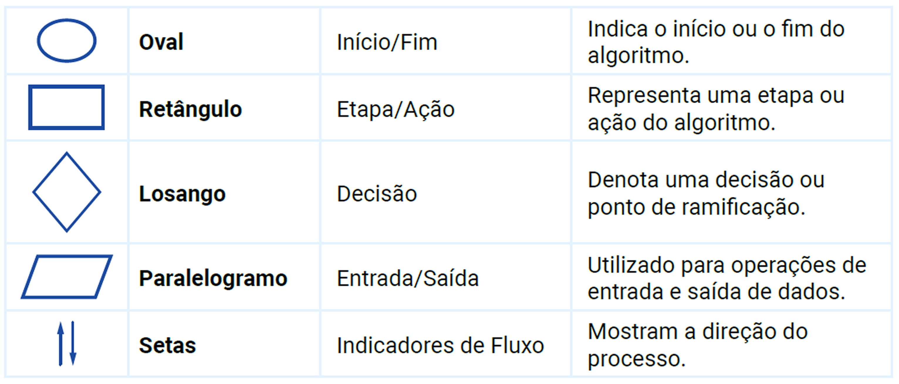

Utilização de algoritmos na resolução
de problemas
Nome da Disciplina
Percurso 1
Conceitos e representação simbólica de algoritmos

Objetivos de Aprendizagem
Neste Percurso, vamos explorar como os algoritmos serão utilizados para resolver problemas, destacando seu papel essencial no mundo moderno, caracterizando a importância dos algoritmos.
Iremos desenvolver programas utilizando elementos fundamentais das linguagens de programação e valorizar os algoritmos como ferramentas indispensáveis para a solução de problemas.
Abordaremos tópicos como o conceito e a representação simbólica de algoritmos, o ambiente computacional necessário para seu desenvolvimento, além de variáveis, expressões, entrada e saída de dados.
Conceitos e representação simbólica de algoritmos
Um algoritmo pode ser definido como uma sequência finita de instruções ou passos que, quando seguidos, resolvem um problema específico ou realizam uma tarefa particular. Os algoritmos são fundamentais em diversas áreas, desde a ciência da computação até a matemática e a engenharia. Eles são usados para automatizar processos, realizar cálculos, processar dados e resolver problemas complexos de maneira eficiente.
Quer entender melhor esse assunto? Assista ao vídeo a seguir
Representação simbólica de algoritmos
Um algoritmo pode ser definido como uma sequência finita de instruções ou passos que, quando seguidos, resolvem um problema específico ou realizam uma tarefa particular. Os algoritmos são fundamentais em diversas áreas, desde a ciência da computação até a matemática e a engenharia. Eles são usados para automatizar processos, realizar cálculos, processar dados e resolver problemas complexos de maneira eficiente.
Pseudocódigo
O pseudocódigo é uma forma textual de descrever algoritmos usando uma linguagem estruturada, mas informal. Ele não segue a sintaxe rígida de uma linguagem de programação específica, o que o torna acessível e fácil de entender. O pseudocódigo permite que os desenvolvedores se concentrem na lógica do algoritmo sem se preocuparem com detalhes de implementação específicos de uma linguagem de programação.
Um exemplo simples de pseudocódigo para encontrar o maior número em uma lista poderia ser:
Algoritmo MaiorNúmero
Entrada: lista de números
Saída: maior número da lista
Maior ← Lista[0]
Para cada número em Lista faça
Se número > Maior então
Maior ← número
Retornar Maior
Este pseudocódigo é fácil de seguir e entender, independentemente do conhecimento prévio de uma linguagem de programação específica.
Fluxogramas
Os fluxogramas são representações gráficas de algoritmos que utilizam símbolos padronizados para ilustrar o fluxo de controle e os passos do algoritmo. Eles são úteis para visualizar a lógica e a estrutura de um algoritmo de maneira clara e intuitiva. Os principais símbolos usados em fluxogramas incluem:

Fonte: EaD Unifor (2024)
A seguir, um exemplo de fluxograma para o algoritmo para ler e calcular a soma de dois números.

Fonte: EaD Unifor (2024)
Crie algoritmos desse jeito
Os fluxogramas facilitam a visualização do processo algorítmico e são especialmente úteis na fase de planejamento e discussão de algoritmos em equipe.
Entrada e Saída de Dados
A entrada e saída de dados são componentes essenciais de qualquer algoritmo que interaja com o usuário ou outros sistemas. A entrada de dados envolve a obtenção de dados externos que o algoritmo usará, enquanto a saída de dados envolve a apresentação dos resultados do algoritmo.

Fonte: EaD Unifor (2024)
Métodos de Entrada
Os dados podem ser inseridos em um algoritmo de várias maneiras, incluindo:
- Entrada do usuário: solicitar que o usuário digite dados via teclado.
- Arquivos: ler dados de arquivos armazenados no sistema de arquivos.
- Sensores: receber dados de sensores em sistemas embarcados.
Métodos de Saída
Os resultados de um algoritmo podem ser apresentados de várias formas, como:
- Tela: exibir resultados no monitor.
- Arquivos: gravar resultados em arquivos para posterior análise.
- Atuadores: enviar comandos para dispositivos físicos.
Material de leitura
Para ampliar seus conhecimentos, que tal agora ler o material de leitura? Outras informações importantes sobre o percurso estão disponíveis neste arquivo.
.svg)
.svg)
Resumo do percurso
Objetivos

- Caracterizar o papel dos algoritmos no processo de resolução de problemas do mundo moderno.
- Desenvolver programas com elementos fundamentais de linguagens de programação.
- Valorar o algoritmo como um solucionador de problemas.
Conceitos
Algoritmos e Linguagem de programação
Exemplos
Linguagens de programação mais comuns incluem Python, Java, C++ e JavaScript
Encerramento
A importância dos algoritmos como solucionadores de problemas e sua aplicação prática em diversas áreas já é uma realidade e deve ser valorizada.
Material complementar
Quer aprender mais? Então, vem conferir essa lista de sugestões feita especialmente para você ampliar seu aprendizado! Ah, os links são externos, tá!?
.svg) Vídeo
Vídeo
Qual é o melhor editor de código?
Artigo
Algoritmos: Entrada e Saída de dados
Artigo